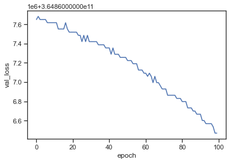

TensorFlow & Keras
Contents
TensorFlow & Keras¶
Case study: We use regression to predict price from area.
Setup¶
%matplotlib inline
import pandas as pd
import numpy as np
import seaborn as sns
import matplotlib.pyplot as plt
import seaborn as sns
# Data preprocessing functions
from tensorflow.keras.layers import Normalization
from tensorflow.keras.layers import IntegerLookup
from tensorflow.keras.layers import StringLookup
import tensorflow as tf
from tensorflow import keras
from tensorflow.keras import layers
from tensorflow.keras.layers.experimental import preprocessing
from sklearn.model_selection import train_test_split
from sklearn.metrics import r2_score
print(tf.__version__)
sns.set_theme(style="ticks", color_codes=True)
2.7.1
Data¶
Import¶
See notebook “Data” for details about data preprocessing
link = "https://raw.githubusercontent.com/kirenz/regression/main/_static/data/duke-data.csv"
df = pd.read_csv(link)
df.info()
<class 'pandas.core.frame.DataFrame'>
RangeIndex: 97 entries, 0 to 96
Data columns (total 7 columns):
# Column Non-Null Count Dtype
--- ------ -------------- -----
0 price 97 non-null int64
1 bed 97 non-null int64
2 bath 97 non-null float64
3 area 97 non-null int64
4 year_built 97 non-null int64
5 cooling 97 non-null object
6 lot 97 non-null float64
dtypes: float64(2), int64(4), object(1)
memory usage: 5.4+ KB
Data splitting¶
Create data split:
df_test = df.sample(frac=0.2, random_state=123)
df_train = df.drop(df_test.index)
print(
"Using %d samples for training and %d for validation"
% (len(df_train), len(df_test))
)
Using 78 samples for training and 19 for validation
Transform to Tensors¶
First, we define a function to create our tensors:
def dataframe_to_dataset(dataframe):
dataframe = df.copy() # make a copy of your dataframe
labels = dataframe.pop("price") # return label and drop from frame
ds = tf.data.Dataset.from_tensor_slices((dict(dataframe), labels)) # create tensor
ds = ds.shuffle(buffer_size=len(dataframe)) #shuffle data
return ds # return dataset
Use function to create tensor data
ds_train = dataframe_to_dataset(df_train) # create train dataset
ds_test = dataframe_to_dataset(df_test) # create test dataset
Let’s batch the datasets (combine some of our samples).
ds_train = ds_train.batch(32)
ds_test = ds_test.batch(32)
Feature preprocessing¶
Define numerical preprocessing function
def encode_numerical_feature(feature, name, dataset):
# Create a Normalization layer for our feature
normalizer = Normalization()
# Prepare a dataset that only yields our feature
ds_feature = dataset.map(lambda x, y: x[name])
ds_feature = ds_feature.map(lambda x: tf.expand_dims(x, -1))
# Learn the statistics of the data
normalizer.adapt(ds_feature)
# Normalize the input feature
encoded_feature = normalizer(feature)
return encoded_feature
Define categorical preprocessing function
def encode_categorical_feature(feature, name, dataset, is_string):
lookup_class = StringLookup if is_string else IntegerLookup
# Create a lookup layer which will turn strings into integer indices
lookup = lookup_class(output_mode="binary")
# Prepare a Dataset that only yields our feature
ds_feature = dataset.map(lambda x, y: x[name])
ds_feature = ds_feature.map(lambda x: tf.expand_dims(x, -1))
# Learn the set of possible string values and assign them a fixed integer index
lookup.adapt(ds_feature)
# Turn the string input into integer indices
encoded_feature = lookup(feature)
return encoded_feature
Define
keras.Inputfor every feature:
Numerical features
area = keras.Input(shape=(1,), name="area")
Categorical features encoded as integers
# none
Categorical feature encoded as string
# none
Make a list of all keras.Input feature names
all_inputs = [
area,
]
Perform preprocessing
# Numerical features
area_encoded = encode_categorical_feature(area, "area", ds_train, False)
# Integer categorical features
# String categorical features
Make a list of all the preprocessed features you want to use in your model
all_features = layers.concatenate(
[
area_encoded,
]
)
Model¶
Build¶
Build the model
x = layers.Dense(1, activation="relu")(all_features)
x = layers.Dropout(0.2)(x)
output = layers.Dense(1)(x)
model = keras.Model(all_inputs, output)
Compile¶
Compile the model
model.compile(optimizer="adam",
loss ='mse',
metrics=[keras.metrics.RootMeanSquaredError()])
Train¶
%%time
history = model.fit(ds_train,
epochs=100,
validation_data=ds_test,
verbose=0)
/Users/jankirenz/opt/anaconda3/envs/tf/lib/python3.8/site-packages/keras/engine/functional.py:559: UserWarning: Input dict contained keys ['bed', 'bath', 'year_built', 'cooling', 'lot'] which did not match any model input. They will be ignored by the model.
inputs = self._flatten_to_reference_inputs(inputs)
CPU times: user 1.87 s, sys: 166 ms, total: 2.03 s
Wall time: 1.8 s
Evaluate¶
model.evaluate(ds_test)
4/4 [==============================] - 0s 1ms/step - loss: 364866535424.0000 - root_mean_squared_error: 604041.8125
[364866535424.0, 604041.8125]
predictions = model.predict(ds_test)
predictions[3]
array([0.88366807], dtype=float32)
ds_test
<BatchDataset shapes: ({bed: (None,), bath: (None,), area: (None,), year_built: (None,), cooling: (None,), lot: (None,)}, (None,)), types: ({bed: tf.int64, bath: tf.float64, area: tf.int64, year_built: tf.int64, cooling: tf.string, lot: tf.float64}, tf.int64)>
hist = pd.DataFrame(history.history)
hist['epoch'] = history.epoch
hist.tail()
| loss | root_mean_squared_error | val_loss | val_root_mean_squared_error | epoch | |
|---|---|---|---|---|---|
| 95 | 3.648666e+11 | 604041.8750 | 3.648666e+11 | 604041.8750 | 95 |
| 96 | 3.648665e+11 | 604041.8125 | 3.648666e+11 | 604041.8750 | 96 |
| 97 | 3.648665e+11 | 604041.8125 | 3.648665e+11 | 604041.8125 | 97 |
| 98 | 3.648665e+11 | 604041.7500 | 3.648665e+11 | 604041.7500 | 98 |
| 99 | 3.648665e+11 | 604041.7500 | 3.648665e+11 | 604041.7500 | 99 |
sns.lineplot(x="epoch", y="val_loss", data=hist);
